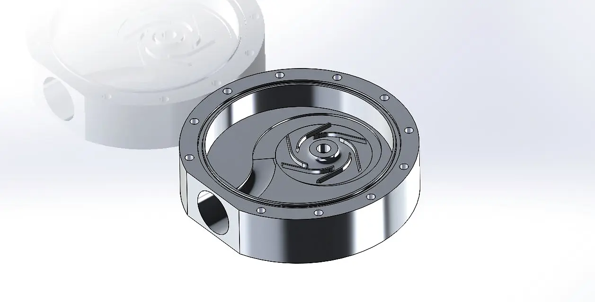
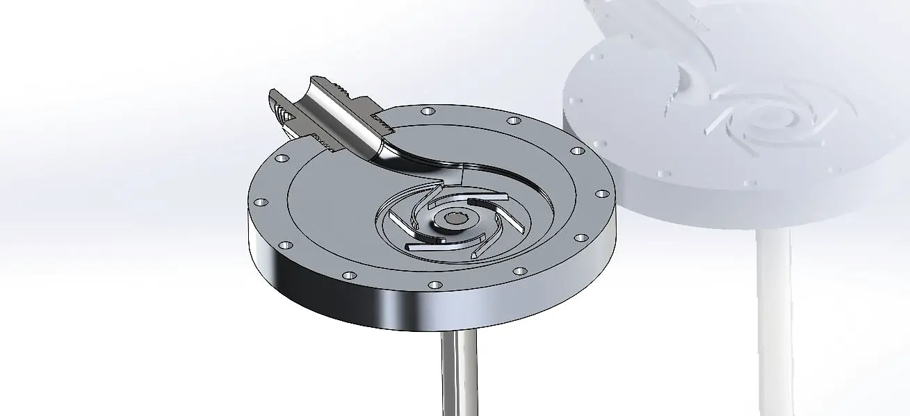
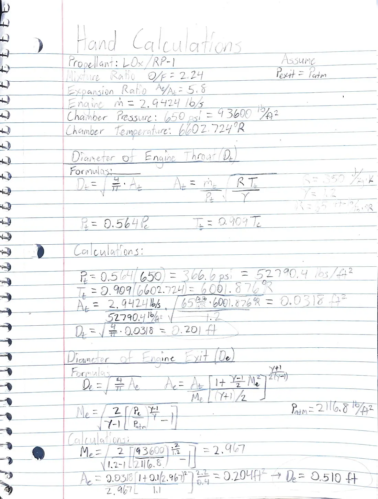
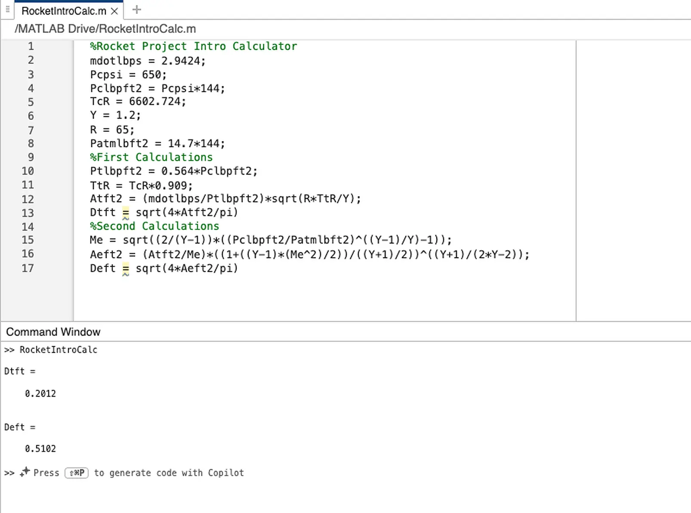
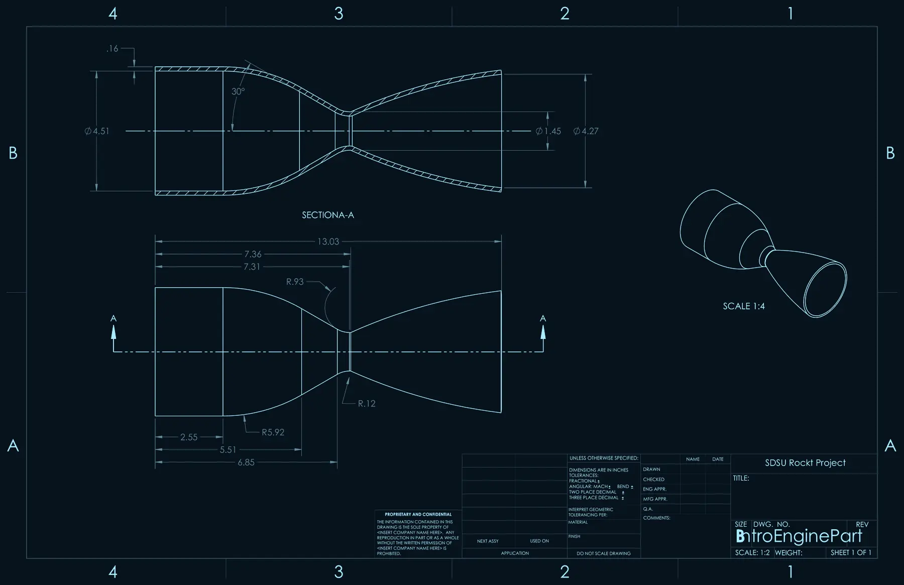
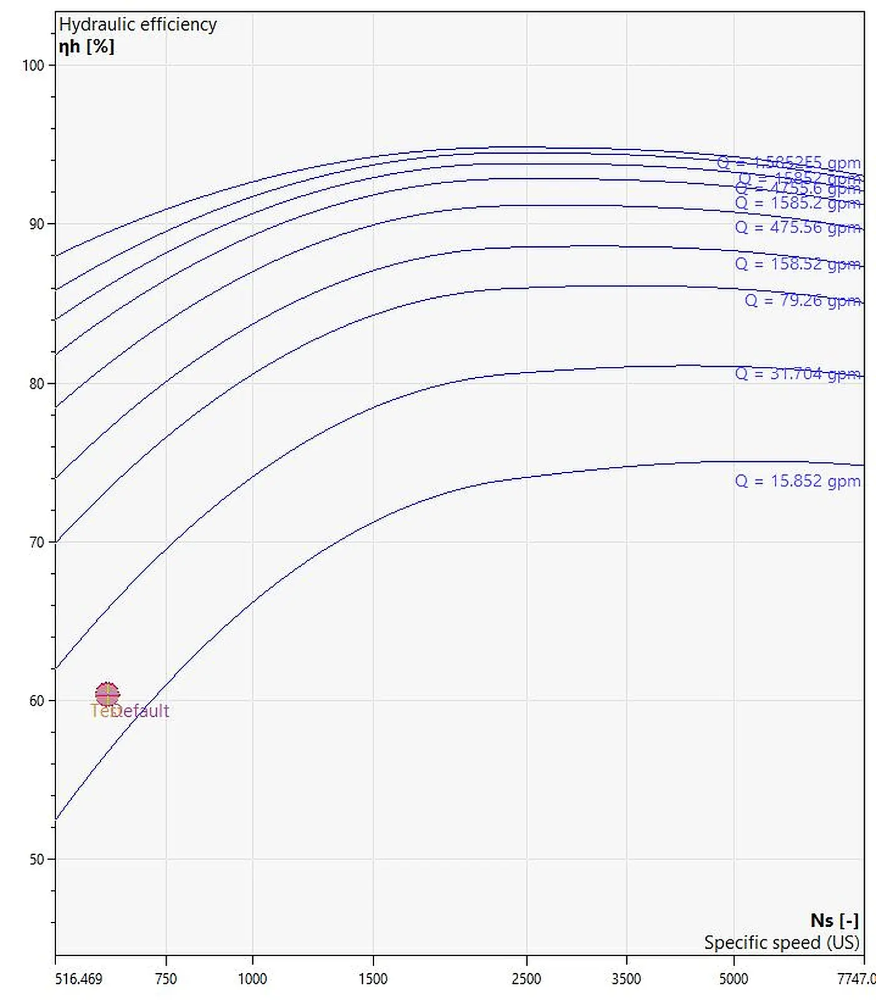

01The pump
Running fast keeps the pump small and efficient, but it puts real torque through a small-diameter shaft. The team's Preliminary Design Review covered pump sizing and NPSH, an unshrouded six-vane impeller, the volute, sealing options, a brushless motor, and a test plan with pressure transducers, a flow meter, and thermocouples.
02My part: the main shaft
I owned the main rotary shaft calculations. Starting from the motor's 11.4 hp at 30,000 rpm, I worked out shaft torque, then the torsional shear stress at the threaded minor diameter (the weakest section), then a factor of safety for each candidate material, scripting the math in MATLAB so every option could be compared the same way.
I compared five off-the-shelf McMaster-Carr shafts on yield strength, thread size, cost, and safety factor:
| Shaft | Diameter | Material | Yield | Cost |
|---|---|---|---|---|
| Threaded rotary | ½ in (⅜-16) | 1117 carbon steel | 58 kpsi | $28.65 |
| Threaded rotary | ¾ in (½-13) | 1117 carbon steel | 58 kpsi | $37.33 |
| Threaded rotary | 1 in (⅝-11) | 1117 carbon steel | 58 kpsi | $53.95 |
| Rotary | ¾ in | 1566 carbon steel | 87 kpsi | $15.39 |
| Rotary | ¾ in | 1045 carbon steel | 65.3 kpsi | $11.26 |
The team's design review carried 1045 carbon steel forward for the shaft, with a keyless tapered fit to the 6061-T6 aluminum impeller.
03Thrust chamber sizing
Joining propulsion meant finishing an admission project first: research on rocket engine fundamentals, then sizing a thrust chamber from scratch. I worked the problem by hand first, checked it in MATLAB, and modeled the resulting chamber and nozzle in SolidWorks.
| Input | Value |
|---|---|
| Propellants | LOX / RP-1 |
| Mixture ratio (O/F) | 2.24 |
| Expansion ratio (Ae/At) | 5.8 |
| Total mass flow rate | 2.9424 lb/s |
| Chamber pressure | 650 psi |
| Chamber temperature | 6,602.7 °R |
| Assumptions | γ = 1.2, exit pressure = atmospheric |
From there I found the throat conditions from the choked-flow relations (Pt ≈ 0.564 Pc, Tt ≈ 0.909 Tc), sized the throat area from the mass flow, solved for the exit Mach number that expands the flow to atmospheric pressure, and sized the exit from the isentropic area ratio.
04Gallery






Click any image to enlarge. Technical drawings are shown in an inverted blueprint style.